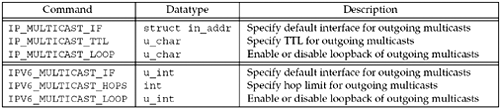
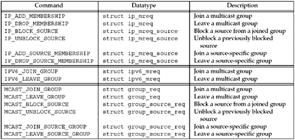

21.6 Multicast Socket Options
The API support for traditional multicasting requires only five new socket options. Source-filtering support, which is required for SSM, adds four more. Figure 21.8 shows the three nonmembership-related socket options, plus the datatype of the argument expected in the call to getsockopt or setsockopt. Figure 21.9 shows the six membership-related socket options for IPv4, IPv6, and the IP version-independent API. A pointer to a variable of the datatype shown is the fourth argument to getsockopt and setsockopt. All nine of these options are valid with setsockopt, but the six that join and leave a multicast group or source are not allowed with getsockopt.


The IPv4 TTL and loopback options take a u_char argument, while the IPv6 hop limit and loopback options take an int and u_int argument, respectively. A common programming error with the IPv4 multicast options is to call setsockopt with an int argument to specify the TTL or loopback (which is not allowed; pp. 354–355 of TCPv2), since most of the other socket options in Figure 7.1 have integer arguments. The change with IPv6 makes them more consistent with other options.
We now describe each of these nine socket options in more detail. Notice that the nine options are conceptually identical between IPv4 and IPv6; only the name and argument type are different.
IP_ADD_MEMBERSHIP, IPV6_JOIN_GROUP, MCAST_JOIN_GROUP
Join an any-source multicast group on a specified local interface. We specify the local interface with one of its unicast addresses for IPv4 or with the interface index for IPv6 and the protocol-independent API. The following three structures are used when joining or leaving a group:
struct ip_mreq {
struct in_addr imr_multiaddr; /* IPv4 class D multicast addr */
struct in_addr imr_interface; /* IPv4 addr of local interface */
};
struct ipv6_mreq {
struct in6_addr ipv6mr_multiaddr; /* IPv6 multicast addr */
unsigned int ipv6mr_interface; /* interface index, or 0 */
};
struct group_req {
unsigned int gr_interface; /* interface index, or 0 */
struct sockaddr_storage gr_group; /* IPv4 or IPv6 multicast addr */
}
If the local interface is specified as the wildcard address for IPv4 (INADDR_ANY) or as an index of 0 for IPv6, then a single local interface is chosen by the kernel. We say that a host belongs to a given multicast group on a given interface if one or more processes currently belongs to that group on that interface. More than one join is allowed on a given socket, but each join must be for a different multicast address, or for the same multicast address but on a different interface from previous joins for that address on this socket. This can be used on a multihomed host where, for example, one socket is created and then for each interface, a join is performed for a given multicast address. Recall from Figure 21.3 that IPv6 multicast addresses have an explicit scope field as part of the address. As we noted, IPv6 multicast addresses that differ only in scope represent different groups. Therefore, if an implementation of NTP wanted to receive all NTP packets, regardless of scope, it would have to join ff01::101 (interface-local), ff02::101 (link-local), ff05::101 (site-local), ff08::101 (organization-local), and ff0e::101 (global). All the joins could be performed on a single socket, and the IPV6_PKTINFO socket option could be set (Section 22.8) to have recvmsg return the destination address of each datagram. The IP protocol-independent socket option (MCAST_JOIN_GROUP) is the same as the IPv6 option except that it uses a sockaddr_storage instead of in6_addr to pass the group address to the kernel. A sockaddr_storage (Figure 3.5) is large enough to store any type of address the system supports. Most implementations have a limit on the number of joins that are allowed per socket. This limit is specified as IP_MAX_MEMBERSHIPS (20 for Berkeley-derived implementations), but some implementations have lifted this limitation or raised the maximum. When the interface on which to join is not specified, Berkeley-derived kernels look up the multicast address in the normal IP routing table and use the resulting interface (p. 357 of TCPv2). Some systems install a route for all multicast addresses (that is, a route with a destination of 224.0.0.0/8 for IPv4) upon initialization to handle this scenario. The change was made with the IPv6 and protocol-independent options to use an interface index to specify the interface instead of the local unicast address that is used with IPv4 to allow joins on unnumbered interfaces and tunnel endpoints. The original IPv6 multicast API definition used IPV6_ADD_MEMBERSHIP instead of IPV6_JOIN_GROUP. The API is otherwise the same. Our mcast_join function described later hides this difference.
IP_DROP_MEMBERSHIP, IPV6_LEAVE_GROUP, MCAST_LEAVE_GROUP
Leave an any-source multicast group on a specified local interface. The same structures that we just showed for joining a group are used with this socket option. If the local interface is not specified (that is, the value is INADDR_ANY for IPv4 or it has an interface index of 0 for IPv6), the first matching multicasting group membership is dropped. If a process joins a group but never explicitly leaves the group, when the socket is closed (either explicitly or on process termination), the membership is dropped automatically. It is possible for multiple sockets on a host to each join the same group, in which case, the host remains a member of that group until the last socket leaves the group. The original IPv6 multicast API definition used IPV6_DROP_MEMBERSHIP instead of IPV6_LEAVE_GROUP. The API is otherwise the same. Our mcast_leave function described later hides this difference.
IP_BLOCK_SOURCE, MCAST_BLOCK_SOURCE
Block receipt of traffic on this socket from a source given an existing any-source group membership on a specified local interface. If all joined sockets have blocked the same source, the system can inform routers that this traffic is unwanted, possibly affecting multicast routing in the network. It can be used to ignore traffic from rogue senders, for example. We specify the local interface with one of its unicast addresses for IPv4 or with the interface index for the protocol-independent API. The following two structures are used when blocking or unblocking a source:
struct ip_mreq_source {
struct in_addr imr_multiaddr; /* IPv4 class D multicast addr */
struct in_addr imr_sourceaddr; /* IPv4 source addr */
struct in_addr imr_interface; /* IPv4 addr of local interface */
};
struct group_source_req {
unsigned int gsr_interface; /* interface index, or 0 */
struct sockaddr_storage gsr_group; /* IPv4 or IPv6 multicast addr */
struct sockaddr_storage gsr_source; /* IPv4 or IPv6 source addr */
}
If the local interface is specified as the wildcard address for IPv4 (INADDR_ANY) or as an index of 0 for the protocol-independent API, then the local interface is chosen by the kernel to match the first membership on this socket for the given group. The block source request modifies an existing group membership, so the group must have already been joined on the specified interface with the IP_ADD_MEMBERSHIP, IPV6_JOIN_GROUP, or MCAST_JOIN_GROUP option.
IP_UNBLOCK_SOURCE, MCAST_UNBLOCK_SOURCE
Unblock a previously blocked source. The arguments must be the same as a previous IP_BLOCK_SOURCE or MCAST_BLOCK_SOURCE request on this socket. If the local interface is specified as the wildcard address for IPv4 (INADDR_ANY) or as an index of 0 for the protocol-independent API, then the first matching blocked source is unblocked.
IP_ADD_SOURCE_MEMBERSHIP, MCAST_JOIN_SOURCE_GROUP
Join a source-specific group on a specified local interface. The same structures that we just showed for blocking or unblocking sources are used with this socket option. The group must not have already been joined using the anysource interface (IP_ADD_MEMBERSHIP, IPV6_JOIN_GROUP, or MCAST_JOIN_GROUP). If the local interface is specified as the wildcard address for IPv4 (INADDR_ANY) or as an index of 0 for the protocol-independent API, then the local interface is chosen by the kernel.
IP_DROP_SOURCE_MEMBERSHIP, MCAST_LEAVE_SOURCE_GROUP
Leave a source-specific group on a specified local interface. The same structures that we just showed for joining a source-specific group are used with this socket option. If the local interface is not specified (that is, the value is INADDR_ANY for IPv4 or it has an interface index of 0 for the protocol-independent API), the first matching source-specific membership is dropped. If a process joins a source-specific group but never explicitly leaves the group, when the socket is closed (either explicitly or on process termination), the membership is dropped automatically. It is possible for multiple processes on a host to each join the same source-specific group, in which case, the host remains a member of that group until the last process leaves the group.
IP_MULTICAST_IF, IPV6_MULTICAST_IF
Specify the interface for outgoing multicast datagrams sent on this socket. This interface is specified as either an in_addr structure for IPv4 or an interface index for IPv6. If the value specified is INADDR_ANY for IPv4 or is an interface index of 0 for IPv6, this removes any interface previously assigned by this socket option and the system will choose the interface each time a datagram is sent. Be careful to distinguish between the local interface specified (or chosen) when a process joins a group (the interface on which arriving multicast datagrams will be received) and the local interface specified (or chosen) when a multicast datagram is output. Berkeley-derived kernels choose the default interface for an outgoing multicast datagram by searching the normal IP routing table for a route to the destination multicast address, and the corresponding interface is used. This is the same technique used to choose the receiving interface if the process does not specify one when joining a group. The assumption is that if a route exists for a given multicast address (perhaps the default route in the routing table), then the resulting interface should be used for input and output.
IP_MULTICAST_TTL, IPV6_MULTICAST_HOPS
Set the IPv4 TTL or the IPv6 hop limit for outgoing multicast datagrams. If this is not specified, both will default to 1, which restricts the datagram to the local subnet.
IP_MULTICAST_LOOP, IPV6_MULTICAST_LOOP
Enable or disable local loopback of multicast datagrams. By default, loopback is enabled: A copy of each multicast datagram sent by a process on the host will also be looped back and processed as a received datagram by that host, if the host belongs to that multicast group on the outgoing interface. This is similar to broadcasting, where we saw that broadcasts sent on a host are also processed as a received datagram on that host (Figure 20.4). (With broadcasting, there is no way to disable this loopback.) This means that if a process belongs to the multicast group to which it is sending datagrams, it will receive its own transmissions. The loopback that is being described here is an internal loopback performed at the IP layer or higher. Should the interface hear its own transmissions, RFC 1112 [Deering 1989] requires that the driver discard these copies. This RFC also states that the loopback option defaults to ON as "a performance optimization for upper-layer protocols that restrict the membership of a group to one process per host (such as a routing protocol)."
The first six pairs of socket options (ADD_MEMBERSHIP/JOIN_GROUP, DROP_MEMBERSHIP/LEAVE_GROUP, BLOCK_SOURCE, UNBLOCK_SOURCE, ADD_SOURCE_MEMBERSHIP/JOIN_SOURCE_GROUP, and DROP_SOURCE_MEMBERSHIP/LEAVE_SOURCE_GROUP) affect the receiving of multicast datagrams, while the last three pairs affect the sending of multicast datagrams (outgoing interface, TTL or hop limit, and loopback). We mentioned earlier that nothing special is required to send a multicast datagram. If no multicast socket option is specified before sending a multicast datagram, the interface for the outgoing datagram will be chosen by the kernel, the TTL or hop limit will be 1, and a copy will be looped back.
To receive a multicast datagram, a process must join the multicast group and it must also bind a UDP socket to the port number that will be used as the destination port number for datagrams sent to the group. The two operations are distinct and both are required. Joining the group tells the host's IP layer and datalink layer to receive multicast datagrams sent to that group. Binding the port is how the application specifies to UDP that it wants to receive datagrams sent to that port. Some applications also bind the multicast address to the socket, in addition to the port. This prevents any other datagrams that might be received for that port to other unicast, broadcast, or multicast addresses from being delivered to the socket.
Historically, the multicast service interface only required that some socket on the host join the multicast group, not necessarily the socket that binds the port and then receives the multicast datagrams. There is the potential, however, with these implementations for multicast datagrams to be delivered to applications that are not multicast-aware. Newer multicast kernels now require that the process bind the port and set any multicast socket option for the socket, the latter being an indication that the application is multicast-aware. The most common multicast socket option to set is a join of the group. Solaris differs slightly and only delivers received multicast datagrams to a socket that has both joined the group and bound the port. For portability, all multicast applications should join the group and bind the port. The newer multicast service interface requires that the IP layer only deliver multicast packets to a socket if that socket has joined the applicable group and/or source. This was introduced with IGMPv3 (RFC 3376 [Cain et al. 2002]) to permit source filtering and source-specific multicast. This reinforces the requirement to join the group, but relaxes the requirement to bind to the group address. However, for maximum portability to both the old and new multicast service interfaces, applications should both join the group and bind to the group address. Some older multicast-capable hosts do not allow the bind of a multicast address to a socket. For portability, an application may wish to ignore a bind error for a multicast address and try again using INADDR_ANY or in6addr_any.
 |